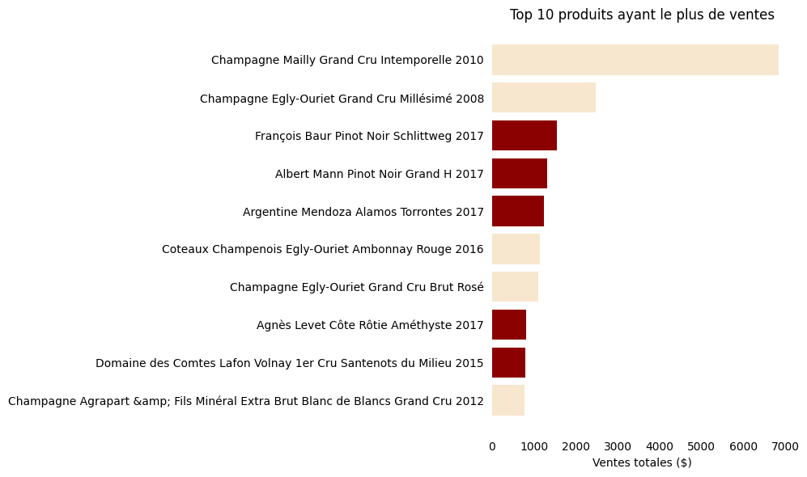
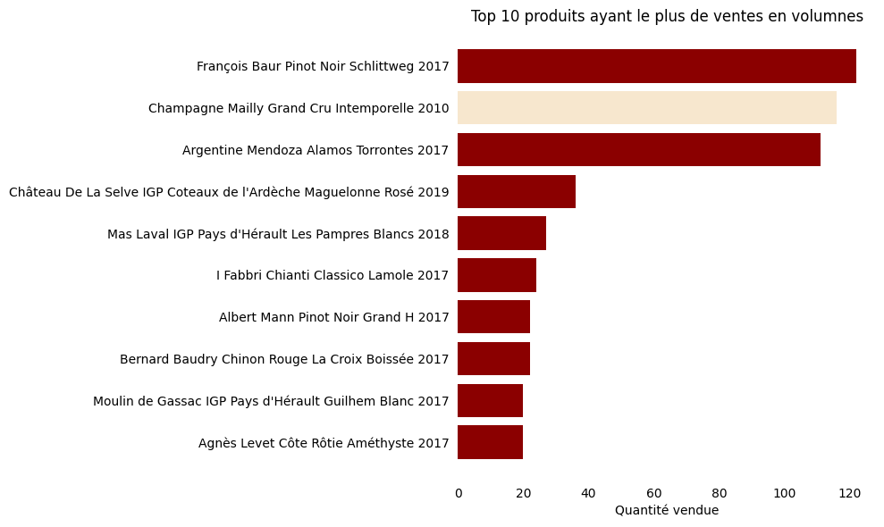
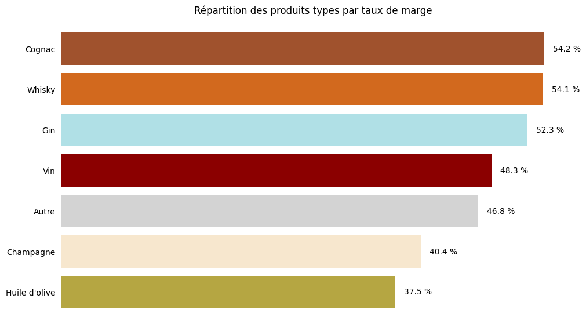
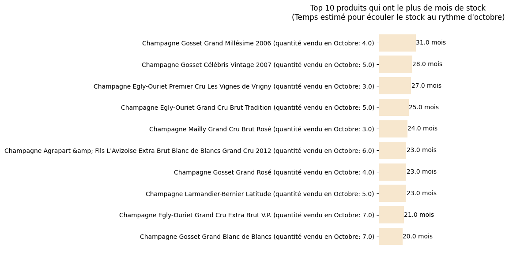

Étude de cas · Analyse commerciale & Data Quality
BottleNeck
Consolider des données issues de plusieurs systèmes, sécuriser leur qualité et les transformer en recommandations exploitables pour piloter les ventes et les stocks.
Contexte
Trois sources, aucun référentiel directement partagé.
Les informations produits, commerciales et logistiques étaient réparties entre un ERP, un site e-commerce et une table de liaison. Les identifiants utilisés par les systèmes étant différents, leur rapprochement devait être contrôlé avant toute analyse.
L’objectif était de construire une vision consolidée des ventes, des marges et des stocks, tout en rendant la chaîne de préparation reproductible, traçable et automatisable.
Produits & stocks
product_id · price · purchase_price · stock_quantity
Correspondance
product_id · id_web
Ventes & catalogue
sku · total_sales · post_title · product_type
Préparation
Fiabiliser les données avant de les analyser.
Prix
Contrôle des valeurs négatives et isolation des produits dont le prix de vente est inférieur au prix d’achat.
Stocks
Correction des stocks négatifs et remise en cohérence des statuts instock et outofstock.
Identifiants
Gestion des valeurs manquantes, nettoyage des espaces et harmonisation des formats de clés.
Doublons
Suppression des doublons exacts et conservation des cas conflictuels pour vérification.
Data Quality
Des contrats de données explicites avec Pandera.
Les contrôles sont centralisés dans des schémas qui vérifient la structure des fichiers, les types, les valeurs manquantes, l’unicité des clés et les règles de cohérence. Les données sont revalidées après transformation.
erp_schema = pa.DataFrameSchema({
"product_id": pa.Column(int, unique=True),
"price": pa.Column(float, checks=pa.Check.ge(0)),
"stock_quantity": pa.Column(int,
checks=pa.Check.ge(0)),
"stock_status": pa.Column(str,
checks=pa.Check.isin([
"instock", "outofstock"
]))
})Traçabilité
Auditer les jointures avant de construire le dataset final.
Une jointure externe avec indicateur permet d’identifier les lignes appariées et les non-correspondances. Les exclusions sont exportées dans des fichiers de contrôle avant la jointure finale.
Analyse
Des données consolidées aux décisions commerciales.
Les indicateurs combinent performance des ventes, contribution au chiffre d’affaires, rentabilité et exposition au risque de surstock.
Cœur de gamme ou segment premium ?
Le cœur de gamme représente la majorité du catalogue et soutient les volumes. Le segment premium contribue proportionnellement davantage au chiffre d’affaires.
des références
des références
Concentration du chiffre d’affaires
L’analyse Pareto identifie les références stratégiques à sécuriser. Les vins dominent ce portefeuille, tandis que les produits premium restent visibles parmi les plus fortes contributions.
Palmarès
Valeur et volume racontent deux histoires différentes.
Les produits premium ressortent davantage en chiffre d’affaires, tandis que le cœur de gamme conserve une place importante dans les volumes vendus.


Rentabilité
Les catégories les plus vendues ne sont pas toujours les plus rentables.
Le cognac et le whisky présentent les taux de marge moyens les plus élevés. Les vins assurent une part importante de l’activité sans occuper la première place en rentabilité relative.

Stocks
Repérer les références qui immobilisent de la valeur.
Plusieurs champagnes premium présentent un horizon d’écoulement supérieur à deux ans au rythme observé, signalant un risque de surstock.

Recommandations
Transformer les constats en actions.
Sécuriser les références stratégiques
Maintenir la disponibilité des produits contribuant fortement au chiffre d’affaires.
Valoriser le segment premium
Mettre en avant les références combinant contribution élevée et bonne rentabilité.
Réduire les stocks dormants
Définir des actions commerciales ciblées pour les produits à rotation faible.
Étendre la période d’analyse
Comparer plusieurs mois pour distinguer tendances structurelles et effets saisonniers.
Industrialisation
Un traitement réutilisable, testé et planifiable.
Les transformations sont isolées dans des fonctions Python. Huit tests unitaires vérifient les règles principales, et l’exécution complète peut être déclenchée par script puis planifiée avec Windows Task Scheduler.
- Prix et stocks négatifs
- Cohérence du statut de stock
- Valeurs manquantes et doublons
- Anomalies de prix et jointures
Compétences démontrées
Une étude de cas end-to-end.
Exploration, nettoyage, transformations et jointures multi-sources.
Pandera, contrats de données, anomalies et audit des correspondances.
KPI, segmentation, Pareto, ventes, marges, rentabilité et stocks.
Choix des graphiques, restitution des résultats et communication des insights.
Fonctions réutilisables, pytest, environnement virtuel et planification.
Interprétation des résultats et recommandations opérationnelles.